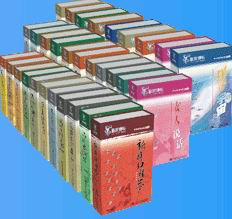

| 中央三部委联合发文“做好2008年全民阅读活动”的通知 |
新华网北京１２月３０日电 中宣部、中央文明办、新闻出版总署近日联合发出《关于认真做好２００８年全民阅读活动的通知》，全文如下：
为更好地贯彻落实党的十七大精神，在全社会倡导多读书、读好书的文明风尚，进一步促进全民族素质的提高，中央宣传部、中央文明办和新闻出版总署决定，在过去两年的基础上继续推动开展全民阅读活动。现将有关事项通知如下： http://photo1.hexun.com/p/2006/0415/17123/b_2D6A0D6797645883.jpg
一、进一步提高对开展全民阅读活动重要意义的认识。培养全体公民崇尚阅读、自觉阅读的良好习惯，是把我们这个历史悠久的文明古国和发展中的社会主义大国，建设成为具有更高文明素质和精神追求国家的重要途径，是学习宣传贯彻十七大精神，建设和谐文化，促进社会主义文化大发展大繁荣的具体体现。要通过开展全民阅读活动，进一步在全社会形成多读书、读好书的良好舆论氛围和社会风尚，让人们在阅读中开阔视野、增长知识、陶冶情操、感受快乐，不断丰富精神世界，增强精神力量，推动经济又好又快发展，促进社会和谐。
二、充分发挥舆论的导向和激励作用，不断扩大全民阅读活动的社会影响。要充分利用广播、电视、期刊、报纸、网络、手机短信等媒体形式，广泛宣传全民阅读活动的意义，认真普及不同阶段的活动主题，及时推荐各类优秀读物，吸引广大群众积极参与。要总结推广各地各部门在开展全民阅读活动中创造的新鲜经验和成功做法，广泛宣传出版发行单位和图书馆、乡村文化站、农家书屋等在解决群众看书难、买书难问题方面作出的各种努力和先进典型，特别要广泛宣传各行各业向边远农村群众、国家贫困县学校、边疆哨卡、进城务工人员开展捐赠助读的好做法好形式，有条件的地区，还可制作和播发推动全民阅读的公益性广告。通过宣传，进一步在全社会营造多读书、读好书，踊跃捐赠、共享阅读的舆论氛围。
三、积极开展形式多样的主题阅读，使全民阅读活动取得切实效果。提高全民族的阅读水平和文明素质，是一项长期的任务。开展全民阅读活动既要持之以恒地坚持，又要根据每年的特点开展有针对性的活动，在取得阶段性成效上下功夫。2008年的全民阅读活动分为三个阶段三大主题。一是春节期间，以开展“带一本好书回家、过文明祥和佳节”活动为主题，丰富节日期间人民群众的精神文化生活。二是
各地各部门可参照上述三个阶段三大主题，结合实际组织实施全民阅读活动。今后每年，中宣部、中央文明办和新闻出版总署将会同文化部、教育部、广电总局、总政宣传部和全国总工会、全国妇联、共青团中央等有关部门，制定并发布全民阅读活动行动计划，推动指导活动开展。
四、大力倡导开展捐赠助读活动，努力培育文明社会风尚。开展捐赠助读，是现阶段缓解部分困难群众买书难、看书难的有效途径，也是培育文明社会风尚、促进社会和谐的实际行动。要创新公共出版服务方式，积极探索有效的工作机制，扩大受益范围，提高捐赠质量，增强服务效益。当前，要把捐赠助读的重点放在解决农村和边远地区、民族地区未成年人和进城务工人员等群体的基本阅读需求上，积极实行政府采购、企业赞助、社会赞助等方式开展捐赠，继续实施“送书下乡”等便民措施，突出重点，整合资源，更好地发挥各方面的积极性。
五、加强领导，健全机构，不断完善全民阅读活动的长效机制。中宣部、中央文明办和新闻出版总署将会同有关部门组成全民阅读活动组织协调办公室，负责具体协调活动的组织和开展。各地党委宣传部、文明办、新闻出版行政部门也要会同相关部门，加强对这项活动的组织协调和领导，不断创新活动组织方式和运行办法。要把开展全民阅读活动与建设公共文化服务体系有机结合起来，与创建文明城市、文明单位、文明社区、文明村镇、文明家庭创建活动有机结合起来，与推进农村发行网点、农家书屋、乡镇文化站、阅读室和社区图书室等基层文化阵地建设有机结合起来，融入元旦、春节、国庆节等节假日和“改革开放30年”、“新中国成立60周年”等重大纪念日活动中，形成长效机制。对组织开展活动中的好做法好经验要认真总结，及时推广。
（来源：新华网）